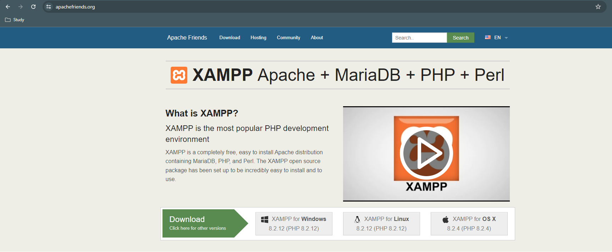
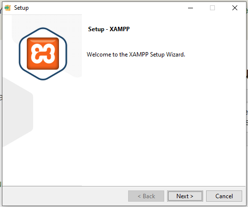
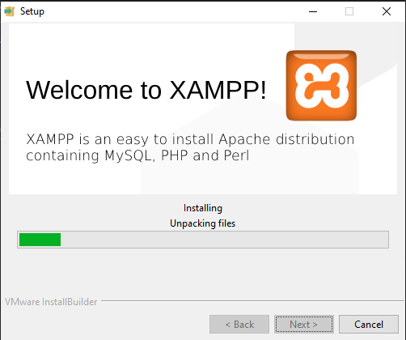
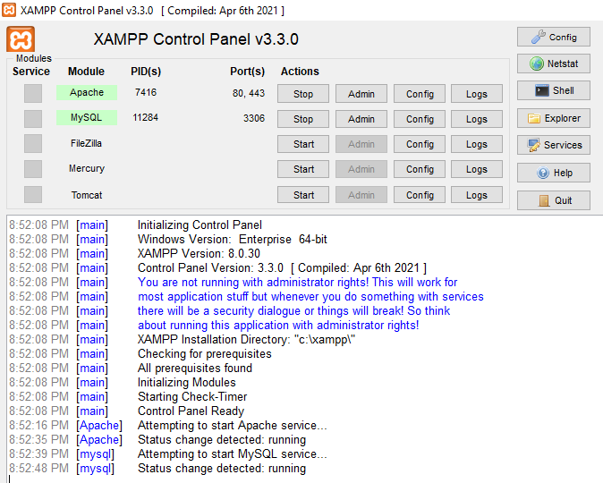
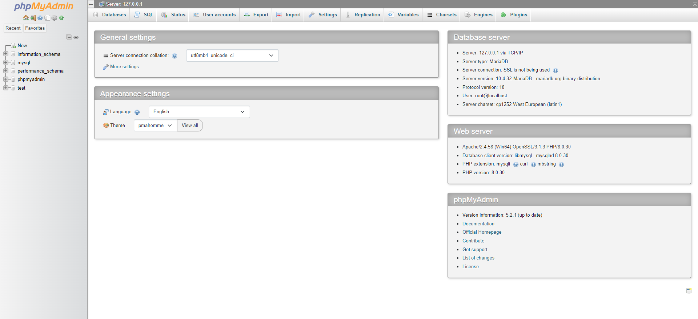

-
XAMPP :
XAMPP is a completely free, easy to install Apache distribution containing MariaDB, PHP, and Perl. The XAMPP open source package has been set up to be incredibly easy to install and to use. It requires only one zip, tar, 7z, or exe file to be downloaded and run, and little or no configuration of the various components that make up the web server is required.
-
Step 1 : Go to the installation website

-
Step 2 : Open Installer

-
Step 3 : Finish Installation

-
Step 4 : Open XAMPP Control Panel

-
Step 5 : Go to localhost/phpmyadmin
